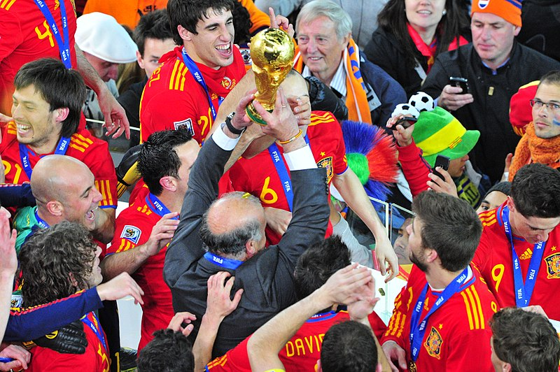

2010 FIFA WORLD CUP
This website gives a full sense of what the collective memory is, and communicates my perspective on its cultural significance.
Spain lifting the FIFA World Cup in 2010, becoming the world champions.
The official logo of the FIFA World Cup in 2010.
A poster used in the FIFA World Cup in 2010.
This is the official ball of the 2010 FIFA World Cup.
The 2010 FIFA World Cup was hosted by South Africa. It was the first time the tournament was held on the African continent.
The tournament took place from June 11 to July 11, 2010.
Spain won the tournament, defeating the Netherlands 1-0 in the final. The only goal of the match was scored by Andrés Iniesta in the 116th minute of extra time.
The closing ceremony of the 2010 World Cup featured performances by Shakira, Juanes, and other artists, celebrating the end of a memorable tournament.